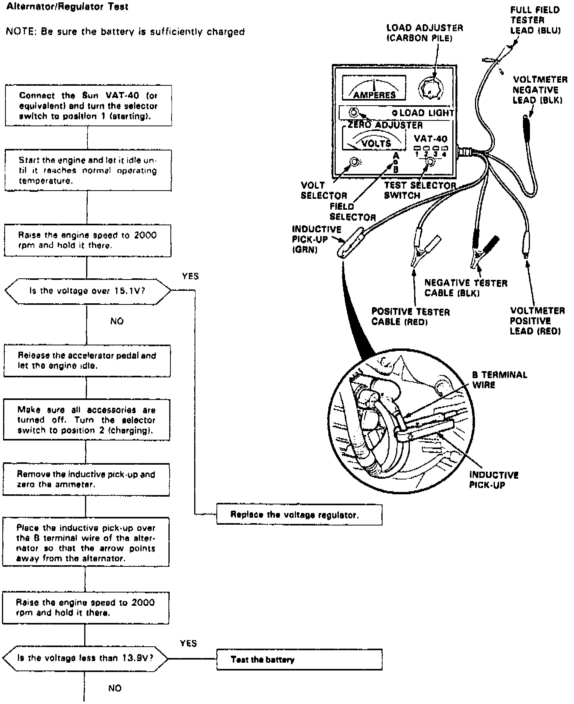
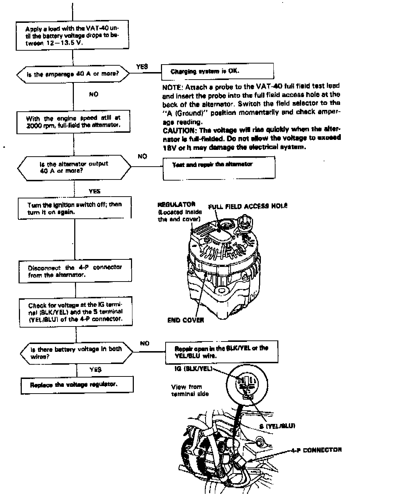
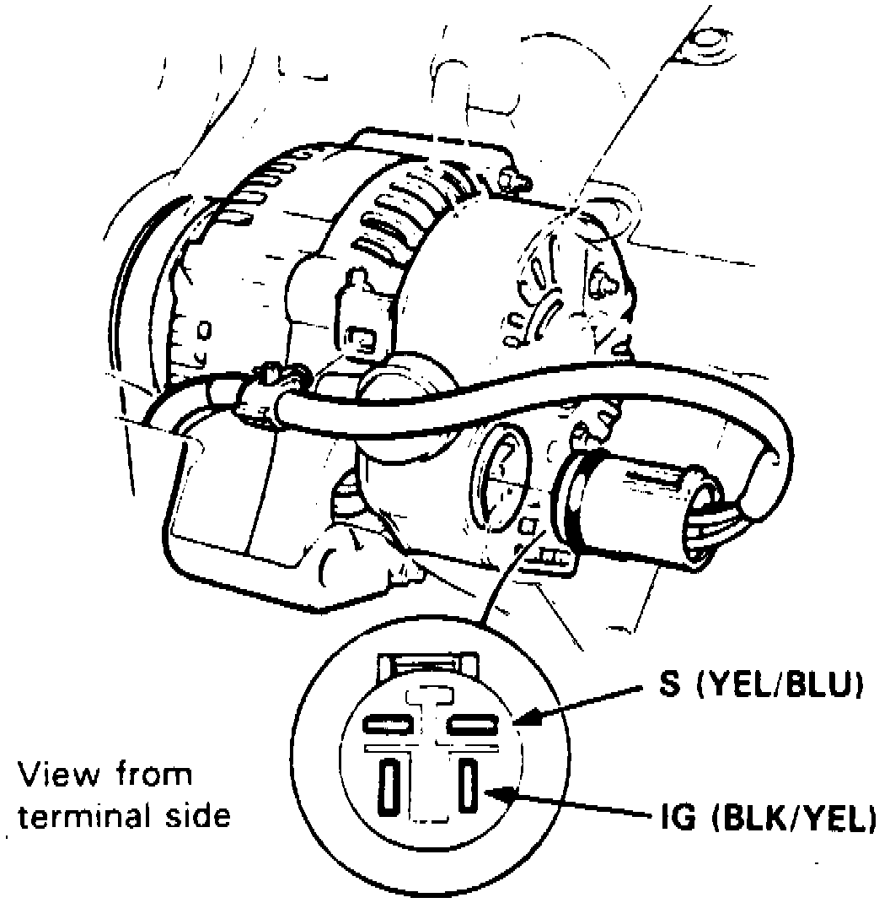

Charging System: Testing and Inspection
Fig. 2 Alternator/Regulator Test (Part 1 Of 2):


Refer to Fig. 2 when diagnosing the charging system.
1. Ensure battery is fully charged and that alternator belt, connections at alternator and main fuses are in satisfactory condition.
2. Ensure fuse No. 15 in dash fuse panel and fuse No. 22 in underhood relay box are in satisfactory condition.
3. Disconnect electrical connector from alternator.
Fig. 3 Alternator Test Connections:

4. Turn ignition switch on and ensure battery voltage exists between alternator connector black/yellow wire terminal and ground, and between yellow/blue wire terminal and ground, Fig. 3. If no voltage exists, check for blown fuse No. 15, or open in black/yellow or yellow/blue wires.